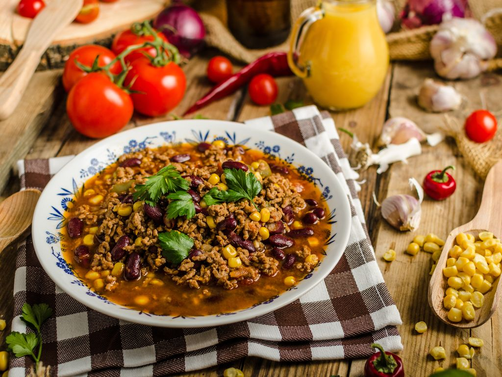

Les recettes de Mère-Grand
La recette du chili con carne Vénézuelien:

L'histoire
Le chili con carne vénézuélien, une version du célèbre plat tex-mex, a été adapté en Vénézuéla avec des influences locales, utilisant souvent du bœuf, des haricots rouges, des tomates, et des épices. Ce plat riche et réconfortant est souvent accompagné de riz, de tortillas ou de farine de maïs pour un repas complet.
Ingrédients pour 4 personne:
- 500 g de haricots rouges secs ou 2 grosses boîtes de conserve
- Piment de Cayenne
- Cumin
- Curcuma
- Quatre-épices
- 0.5 cuillère à café de curry
- 0.5 cuillère à café de sucre de canne (facultatif)
- 2 poivrons rouges
- 2 poivrons jaunes
- 2 poivrons verts
- 1 kg d' oignon émincés
- 1 kg de viande hachée (steak, dinde cuisse, agneau, porc rouelle)
- 500 g de coulis de tomate ou de pulpe
- 70 g de double concentré de tomates (1 petite boîte)
- Paprika
- 1 cuillère à soupe d' huile d'olive
- 2 bouillons
- 0.5 ail
- 285 g de maïs en conserve (1 grosse boîte)
Préparation de la recette
- La veille, dans un grand faitout, faire chauffer 3/4 de litre d'eau avec les 2 cubes de bouillon.
- Dans une sauteuse (ou un Wok), faire chauffer une cuillère à soupe d'huile, y faire revenir les poivrons verts en fines lanières à feu vif.
- Lorsqu'ils deviennent translucides, avec écumoire, les mettre dans le bouillon, et laisser cuire à petits bouillons.
- Faire de même avec les poivrons jaunes, puis les rouges avec le minimum d'huile; continuer avec les oignons qui seront simplement saisis, puis la viande qui devra commencer de griller.
- Ajouter enfin le coulis de tomates, puis le concentré, couvrir, laisser cuire à feu doux environ 4 h. Remuer régulièrement et éventuellement réajuster en eau.
- Après les 4 h de cuisson du chili, ajouter l'ail débarrassé des germes et finement haché, puis les épices; la main sera légère avec le quatre épices et le paprika, concernant le Cayenne ajuster selon le goût épicé désiré.
- Laisser cuire encore 1 h, en remuant régulièrement, puis laisser réduire la sauce jusqu'à consistance.
- Pendant ce temps, si les haricots sont secs, les faire bouillir une dizaine de minutes dans une première eau, les rincer, puis faire cuire dans beaucoup d'eau avec une petite cuillerée à café de bicarbonate de soude et les égoutter.
- Retirer du feu, ajouter les haricots et le maïs préalablement rincés et égouttés.
- Le lendemain, réchauffer à feu doux pendant 1/2 avant de servir.
- Ne pas le servir avec du riz, éventuellement avec d'épaisses crêpes de maïs qui serviront de pain.